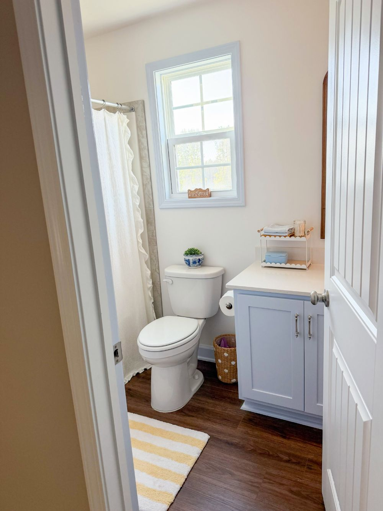
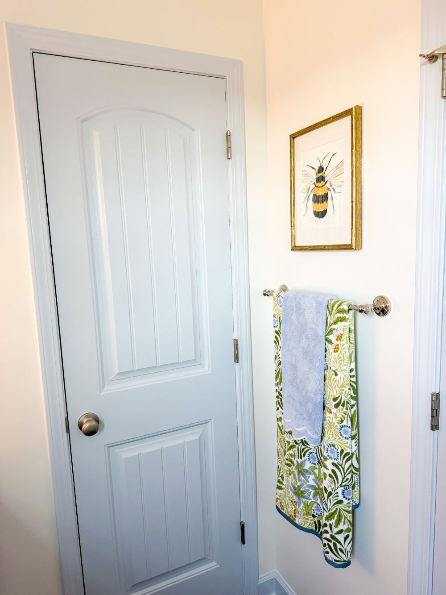
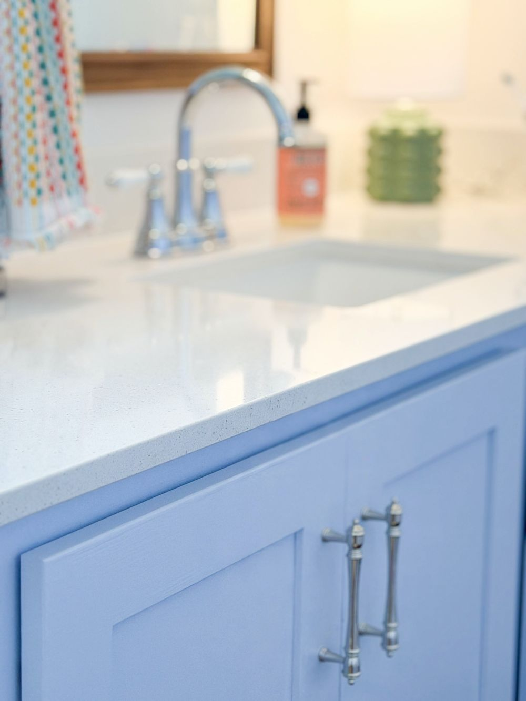

Paint and color
Wall, trim and cabinet colors chosen as one palette.
Interior design
Paint, cabinetry, textiles and accessories chosen together, finished with a watercolor painted for the wall.

Recent room
A plain builder bathroom, refreshed with a periwinkle vanity and matching window trim, polished nickel pulls, a ruffled white curtain, a blue and white planter and a yellow striped rug.
The finishing piece is a bumblebee watercolor Bailey painted for the wall, framed in gold bamboo.


What a room project can include
Interior design from Chintz Creative is room styling by Bailey Powers: choosing paint, finishes, textiles and accessories that work together, and painting art for the room when it needs it.
Wall, trim and cabinet colors chosen as one palette.
Painted vanities and cabinets, with pulls and fixtures to match.
Curtains, towels, rugs and pillows, with pattern used on purpose.
A custom watercolor painted and framed for the wall.
Questions
Room styling and refreshes: paint colors for walls, trim and cabinetry, hardware, textiles, rugs, accessories and art, including custom watercolors painted for the room.
Yes. Bailey can paint a custom watercolor sized and colored for the space, like the bumblebee watercolor in the guest bathroom shown here.
Fill out the intake form, choose Interior design, and describe the room, what you want to change, your timing and budget. Photos of the room help.
Also from the studio: Custom watercolors · Hand lettering
Start a room
Choose Interior design on the intake form and attach a photo of the room as it is now.